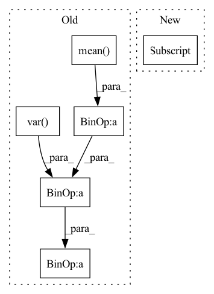

Pattern ID :39729
Before Change
dim = shape[-1]
x = x.view(-1, dim)
x_mean = x.mean(dim = 1, keepdim= True)
x_var = x.var(dim = 1, unbiased = False, keepdim = True)
scaled_x = (x - x_mean)
sqrt_var = (x_var + eps) ** 0.5
inv_var = 1. / sqrt_var
normed_x = scaled_x * inv_var
ctx.save_for_backward(scaled_x, normed_x, gamma, sqrt_var, inv_var)
out = rearrange(gamma, "d -> () d") * normed_x + rearrange(beta, "d -> () d")
return out.view(*shape)
@classmethodAfter Change
x = x.view(-1, dim)
n_rows, n_cols = x.shape
expanded_gamma = gamma[None, :] .expand(n_rows, -1)
expanded_beta = beta[None, :].expand(n_rows, -1)
BLOCK_SIZE = triton.next_power_of_2(n_cols)In pattern: SUPERPATTERN
Frequency: 3
Non-data size: 6
Instances Fragment ID: 113167344
Project Name: lucidrains/triton-transformer
Commit Name: c4a68c1023e8ad92b8f2beeb5a5d5c78fb2cda34
Time: 2021-09-22
Author: lucidrains@gmail.com
File Name: triton_transformer/triton_transformer.py
M Class Name: _layernorm
N Class Name: _layernorm
M Method Name: forward(6)
N Method Name: forward(6)
M Parent Class: autograd.Function
N Parent Class: autograd.Function
M File Name: triton_transformer/triton_transformer.py
N File Name: triton_transformer/triton_transformer.py
M Start Line: 265
M End Line: 277
N Start Line: 337
N End Line: 370
Before Change
self.g = nn.Parameter(torch.ones(dim))
def forward(self, x):
var = torch.var( x, dim = -1, unbiased = False, keepdim = True)
mean = torch.mean( x, dim = -1, keepdim = True)
return (x - mean) / (var + self.eps).sqrt() * self.g
// parallel with residual
// discovered by Wang et al + EleutherAI from GPT-J fameAfter Change
self.register_buffer("beta", torch.zeros(dim))
def forward(self, x):
return F.layer_norm(x, x.shape[-1:] , self.gamma, self.beta)
// parallel with residual
// discovered by Wang et al + EleutherAI from GPT-J fame Fragment ID: 113167343
Project Name: lucidrains/palm-pytorch
Commit Name: 0832087f78006c10d52c0600c7377c5929568e0b
Time: 2022-04-04
Author: lucidrains@gmail.com
File Name: palm_pytorch/palm_pytorch.py
M Class Name: LayerNorm
N Class Name: LayerNorm
M Method Name: forward(2)
N Method Name: forward(2)
M Parent Class: nn.Module
N Parent Class: nn.Module
M File Name: palm_pytorch/palm_pytorch.py
N File Name: palm_pytorch/palm_pytorch.py
M Start Line: 18
M End Line: 20
N Start Line: 19
N End Line: 19
Before Change
def forward(self, x):
eps = 1e-5 if x.dtype == torch.float32 else 1e-3
var = torch.var( x, dim = 1, unbiased = False, keepdim = True)
mean = torch.mean( x, dim = 1, keepdim = True)
return (x - mean) * var.clamp(min = eps).rsqrt() * self.g
class PreNorm(nn.Module):
def __init__(self, dim, fn):After Change
self.register_buffer("beta", torch.zeros(dim))
def forward(self, x):
return F.layer_norm(x, x.shape[-1:] , self.gamma, self.beta)
// positional embeds
Fragment ID: 113167339
Project Name: lucidrains/recurrent-interface-network-pytorch
Commit Name: 627fa4e8c36a59b89f571cdfdb478a7b72cbf855
Time: 2022-12-24
Author: lucidrains@gmail.com
File Name: rin_pytorch/rin_pytorch.py
M Class Name: LayerNorm
N Class Name: LayerNorm
M Method Name: forward(2)
N Method Name: forward(2)
M Parent Class: nn.Module
N Parent Class: nn.Module
M File Name: rin_pytorch/rin_pytorch.py
N File Name: rin_pytorch/rin_pytorch.py
M Start Line: 83
M End Line: 86
N Start Line: 77
N End Line: 77